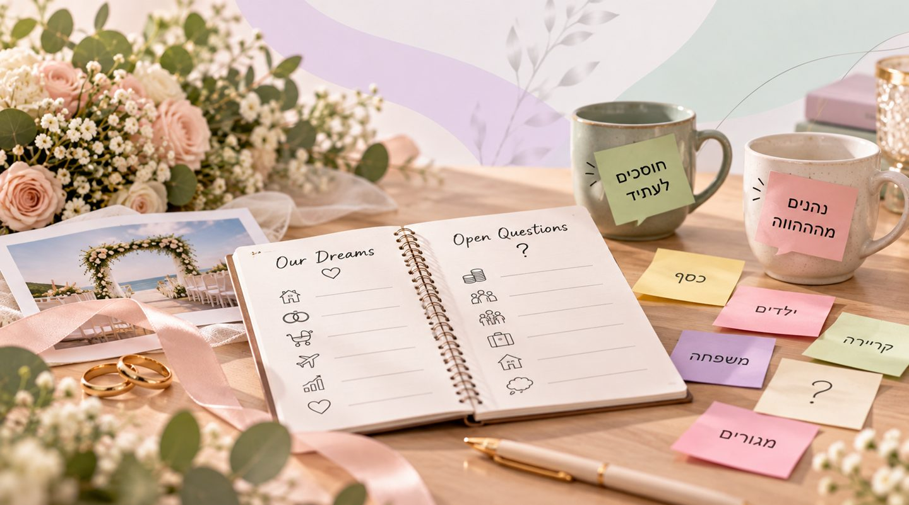

לנוחות הקריאה המאמר כתוב בלשון זכר, אך פונה לנשים וגברים כאחד.
אתם אוהבים, מתכננים עתיד משותף ואולי כבר בחרתם אולם ותאריך לחתונה. אבל האם דיברתם על הדרך שבה תנהלו את הכסף, תחלקו את האחריות בבית או תתמודדו עם חילוקי דעות?
ההכנות לחתונה מלאות בהחלטות, התרגשות וציפייה לחיים המשותפים. בתוך כל אלה, לא תמיד עוצרים לשוחח על השאלות שימשיכו ללוות אתכם הרבה אחרי שהאירוע יסתיים.
גם זוגות שמרגישים בטוחים בקשר עשויים לגלות שיש ביניהם הבדלים משמעותיים בציפיות, בהרגלים ובתפיסות העולם. ההבדלים האלה אינם מעידים בהכרח על בעיה בזוגיות, אבל הדרך שבה מתמודדים איתם יכולה להשפיע על איכות הקשר לאורך זמן.
טיפול זוגי לפני נישואין מתאים יכול לאפשר לבני הזוג להכיר טוב יותר את הצרכים והציפיות של כל אחד מהם, לשפר את התקשורת ולבנות בסיס משותף לקראת הפרק הבא בחייהם.
אנחנו אוהבים, אז למה אנחנו לא תמיד מסכימים?
בתחילת הקשר קל יחסית להתמקד בדברים המשותפים: תחומי עניין, משיכה, חלומות ותוכניות לעתיד. אבל ככל שהקשר מתקדם, מתגלים גם ההבדלים.
אחד מבני הזוג מעדיף לחסוך כסף והשני אוהב להוציא על חוויות. אחד זקוק לזמן אישי והשני מעדיף לבלות כמעט כל רגע פנוי יחד.
אלה אינם בהכרח סימנים לחוסר התאמה. כל אחד מגיע לזוגיות עם הרגלים, ערכים וחוויות שצבר לאורך השנים. הקושי מתחיל כאשר כל אחד מניח שהדרך שלו היא המובנת מאליה, ומצפה שבן או בת הזוג יראו את הדברים בדיוק כמוהו.

חמישה נושאים שכדאי לדבר עליהם לפני החתונה
יש שיחות שלא תמיד נעים לפתוח, אבל הן עשויות למנוע אי הבנות ותסכול בהמשך הדרך.
- כסף והתנהלות כלכלית: איך מתכננים תקציב משותף? מה היחס לחיסכון, להוצאות ולהתחייבויות כלכליות?
- ילדים והורות: האם שניכם רוצים ילדים? מהן הציפיות שלכם לגבי הורות, חינוך וחלוקת האחריות?
- משפחות המוצא: כמה מקום יתפסו ההורים והמשפחה המורחבת בחיים המשותפים? כיצד תתמודדו עם התערבות או ציפיות שונות?
- קריירה ושאיפות אישיות: איך תומכים בהתפתחות המקצועית של כל אחד, ומה עושים כשהצרכים מתנגשים?
- חלוקת אחריות בבית: מי אחראי על המטלות השוטפות, ואיך יוצרים חלוקה ששני הצדדים מרגישים איתה בנוח?
המטרה אינה להגיע להסכמה מוחלטת על כל שאלה, אלא להבין היכן קיימים פערים וכיצד אפשר להתמודד איתם יחד.
איך פותרים קונפליקטים בלי להפוך כל מחלוקת למאבק?
אחת המיומנויות החשובות בתחילת החיים המשותפים היא היכולת לנהל חילוקי דעות בלי להפוך אותם למאבק על מי צודק.
פתרון קונפליקטים בזוגיות אינו מחייב שאחד מבני הזוג יוותר תמיד למען האחר. הוא דורש נכונות להבין מה עומד מאחורי העמדה של כל אחד ולחפש פתרונות שמתחשבים בצרכים של שניהם.
תקשורת מקרבת יכולה לסייע בכך. במקום לומר "אתה אף פעם לא מתחשב במה שאני רוצה", אפשר להסביר: "חשוב לי שנקבל החלטות משמעותיות ביחד, כי אני רוצה להרגיש שיש מקום לדעה שלי".
השינוי בניסוח אינו מבטיח הסכמה, אבל הוא עשוי להפחית התגוננות ולאפשר שיחה פתוחה יותר.
טיפול זוגי לפני החתונה, האם צריך לחכות למשבר?
לא מעט אנשים מקשרים טיפול זוגי למצבים של מריבות קשות, ריחוק רגשי או זוגיות במשבר. בפועל, אפשר להיעזר בליווי זוגי גם כשמערכת היחסים טובה ורוצים לחזק אותה.
טיפול זוגי לזוגות צעירים יכול להתמקד בתיאום ציפיות, בזיהוי דפוסי תקשורת ובפיתוח כלים להתמודדות עם שינויים.
גם טיפול זוגי לזוג לא נשוי עשוי להיות רלוונטי לזוגות שעוברים לגור יחד, מתלבטים לגבי עתיד הקשר או מבקשים לבנות בסיס יציב לפני התחייבות משמעותית.
חשוב להבין שהמטרה אינה למנוע כל משבר בזוגיות. אי אפשר לדעת מראש אילו אתגרים החיים יציבו בפניכם. המטרה היא לפתח יכולת להתמודד עם קשיים, לשוחח על נושאים רגישים ולצלוח משברים מתוך שיתוף פעולה.
במסגרת טיפול זוגי אפשר לבחון דפוסי תקשורת, להבין את הצרכים של כל אחד ולתרגל דרכים חדשות להתמודדות עם חילוקי דעות.
למדו עוד על טיפול זוגי לפני חתונה ←
איך בונים קשר רגשי חזק כבר בתחילת הדרך?
חיזוק קשר רגשי אינו תלוי רק במחוות רומנטיות או בבילוי זמן משותף. הוא מתפתח גם דרך תחושת הביטחון שאפשר לשתף, להביע קושי ולהישאר נאמנים לעצמנו בתוך מערכת היחסים.
כדאי להקדיש זמן לשיחות שאינן עוסקות רק בסידורי החתונה או במשימות היומיום. לשאול מה משמח את בן או בת הזוג, מה מעורר חשש ומה כל אחד צריך כדי להרגיש אהוב ומוערך.
חשוב גם לזכור שלא כל פער ניתן לגישור. לעיתים השיחות מעלות הבדלים מהותיים שדורשים בחינה מעמיקה של ההתאמה ושל הרצון להמשיך בדרך משותפת.
דווקא האפשרות לדבר על הדברים האלה בכנות, לפני החתונה, עשויה לסייע בקבלת החלטות מודעות יותר.
נפשלווה: מתחילים את החיים המשותפים עם כלים לזוגיות
החתונה היא אירוע משמעותי, אבל הזוגיות ממשיכה להיבנות בכל יום מחדש, דרך החלטות קטנות, שיחות, התמודדויות ורגעים משותפים.
בקליניקה של נפשלווה, אלון שמש מלווה זוגות באופן אישי וקשוב באמצעות כלים מעולם ה-NLP, המתמקדים בזיהוי דפוסי חשיבה, פרשנויות ותגובות אוטומטיות.
התהליך יכול לסייע לזוגות צעירים לבחון את הציפיות שלהם, לשפר את התקשורת ולפתח דרכים להתמודדות עם חילוקי דעות עוד לפני שהם הופכים למקור לתסכול מתמשך.
באתר נפשלווה, הבית לטיפול רגשי זוגי, תוכלו להכיר את הגישה של אלון שמש ואת אפשרויות הליווי לקראת תחילת הדרך המשותפת.
כי ההכנה לחתונה חשובה, אבל ההכנה לחיים שאחריה חשובה לא פחות.